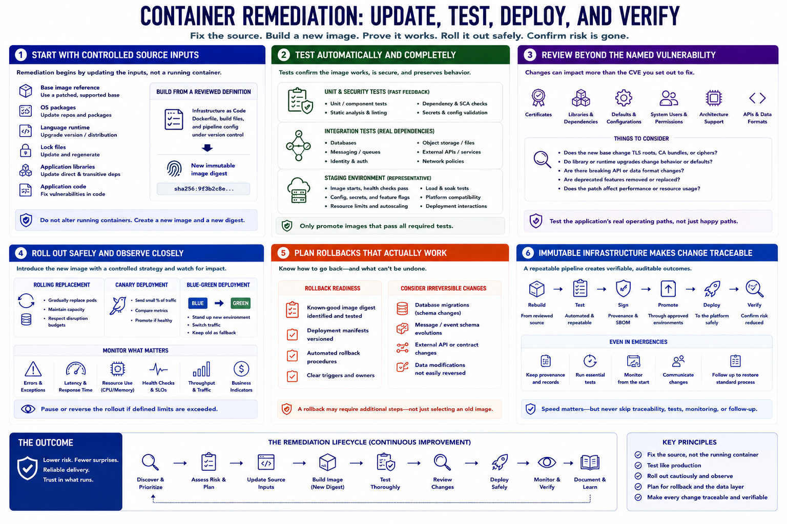

Rebuild, Test, and Redeploy
Connecting to LMS... Progress: in progress

Narration
Remediation begins by updating controlled source inputs: the base image reference, operating-system packages, language runtime, lock files, application libraries, or code. Build from a reviewed definition rather than altering a running container, then assign the result a new immutable image digest.
Automated tests should confirm that the image starts, passes health checks, and preserves application behavior. Unit and security tests catch local failures. Integration tests verify databases, messaging, identity, storage, and external services. A representative staging environment reveals deployment and platform interactions.
Review changes beyond the named vulnerability. A newer base may update certificates, libraries, defaults, system users, or architecture support. Dependency upgrades may change APIs or data formats. Patch testing should reflect the application's actual operating paths.
Roll out through a controlled strategy such as rolling replacement, canary exposure, or blue-green deployment when appropriate. Monitor errors, latency, resource use, health, and business indicators while the new image is introduced. Pause or reverse the rollout when defined limits are exceeded.
Rollback planning identifies a known-good image and the conditions for returning to it. It must also account for database migrations, message schemas, or external changes that may not be reversible merely by selecting an older container.
Immutable infrastructure makes the deployed state traceable: rebuild, test, sign, promote, deploy, and verify. Emergency patches may compress timelines, but they should not abandon provenance, essential tests, monitoring, or follow-up work that restores the standard process.